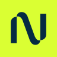
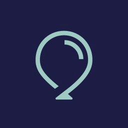

Nebius AI ↗
I'm an active investor in Nebius, a purpose-built AI cloud company building infrastructure from silicon to API for AI builders and teams.
NASDAQ: NBIS · AI cloud infrastructure
portfolio
Since May 2026, I’ve been actively investing across the AI infrastructure stack. I’m especially interested in the compute, cloud, data, developer tooling, and orchestration layers that make applied AI possible—and I’m actively looking to write angel checks into thoughtful AI infrastructure companies.
investment timeline

I'm an active investor in Nebius, a purpose-built AI cloud company building infrastructure from silicon to API for AI builders and teams.
NASDAQ: NBIS · AI cloud infrastructure

I'm an investor in Balloon, a research-backed collaboration platform that helps teams reduce groupthink, amplify unheard voices, and make better decisions.
Founded by Amanda Greenberg and Noah Bornstein.